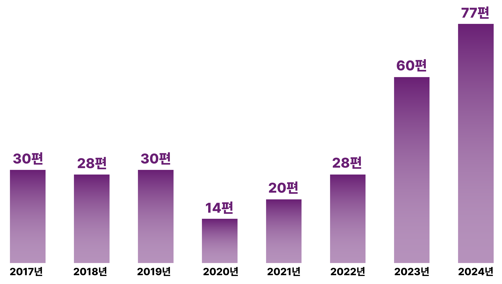
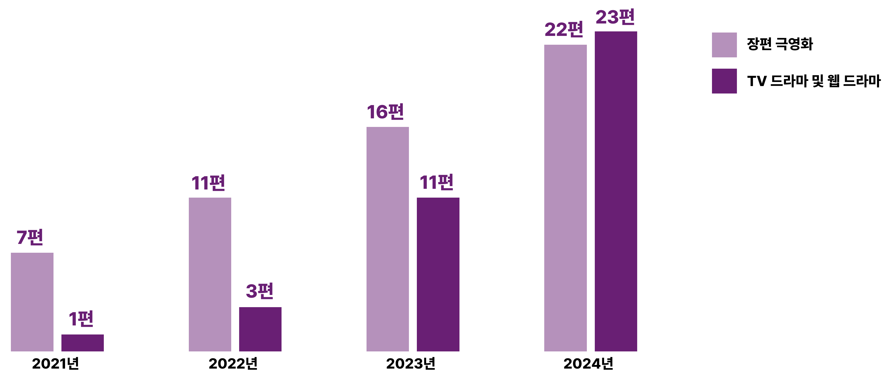

영상 콘텐츠는 2차원의 공간인 스크린 혹은 모니터 안에 존재하지만, 그 안에 담긴 세상은 3차원인 실제 공간이다. 공간은 단순한 배경으로 존재하는 것이 아니라, 인물의 서사에 개연성을 부여하고 독특한 분위기를 자아내고 관람자에게 정서를 환기시키면서 오롯이 몰입하게 만든다. 이렇듯 강력한 공간의 힘이 화면 속에 담긴 장소에 특별한 의미를 부여하기에, 콘텐츠의 배경 선정은 영상 콘텐츠 제작에 있어 핵심 요소이다. 이런 점에서 해외 영상 콘텐츠들이 한국을 배경으로 선택하는 과정에는 다른 나라가 대신할 수 없는 매력적인 요인이 있어야 한다.
[그림 1] 해외 콘텐츠의 국내 제작 지원 작품 수
(출처: 한국영상위원회 자료 재구성)
[그림 1]에 따르면, 코로나19 이전에는 매년 30여 편이던 해외 영상 콘텐츠의 국내 촬영이 코로나 팬데믹의 고비가 한결 지나간 2023년과 2024년에 폭발적으로 증가한 것을 알 수
있다. 이러한 경향은 코로나 시기 있었던 특정 요인들이 해외 콘텐츠 제작진의 한국에 대한 관심과 K-로케이션을 이끌었음을 짐작케 한다. 첫 번째 요인으로 코로나 위기가 한창 지속되던 시기인
2020~2021년 한국 대중문화의 전 세계적인 인기를 꼽을 수 있다. 이 시기 한국의 대중문화는 다양한 영역에서 의미 있는 성과를 거두었다. 2020년 아카데미 작품상을 비롯해 4개 부문을
수상한 영화 <기생충>, 2020년과 2021년 빌보드 ‘핫100’ 1위를 기록한 BTS, 2021년 9월 공개된 넷플릭스 시리즈 <오징어 게임> 시즌 1의 전 세계적인 열풍을 대표로 하여,
코로나 시기 K-콘텐츠는 눈부신 성장과 세계적인 인기를 끌었다. 한국 대중문화에 대한 호응과 관심은 한국을 북한과 자동 연상시키던 분단국가 이미지에서 벗어나는 계기가 되었고, 이것이
점차 ‘한국’ 자체에 대한 관심으로 이어져 한국으로의 로케이션을 결정하는 데 영향을 미친 것으로 이해할 수 있다.
코로나 시기 OTT로의 시청 행태 변화도 2023년과 2024년 해외 콘텐츠의 한국 촬영이 확대된 또 다른 요인이다. [그림 2]를 살펴보면, 장편 극영화 비율이 점차 낮아지고 TV
드라마 및 웹드라마의 비중이 급증하는 것을 볼 수 있다. 시기적으로 앞서 언급한 것처럼 2020~2021년 한국 대중문화의 전 세계적인 인기 직후인 2023년과 2024년에 급속도로
한국을 배경으로 하는 TV 드라마 및 웹드라마의 제작이 증가한 것을 볼 수 있다. 더욱이 장편 극영화 수가 압도적으로 많았던 2021년(7편 vs. 1편)과 2022년(11편 vs.
3편)을 지나 팬데믹이 완화되기 시작한 2023년 이후로 장편 극영화와 TV 및 웹드라마 간 비중 차이가 급격히 감소한 것을 볼 수 있다. 그러다가 2024년에는 TV 드라마 및
웹드라마가 장편 극영화 수를 결국 추월한 것으로 나타났다. TV와 웹드라마가 하나의 카테고리로 포괄되어 집계되었음에도, 코로나 팬데믹 이후 극장 영화 산업의 급속한 위축과 OTT
중심의 시청 행태 변화가 넷플릭스를 필두로 한 OTT 플랫폼의 시리즈물이 한국을 배경으로 하여 제작하는 작품 수 급증에 영향을 미쳤다고 볼 수 있다.
[그림 2] 유형별 해외 콘텐츠 국내 제작지원 작품 수
(출처: 한국영상위원회 자료 재구성)
한국 콘텐츠 제작 환경의 장점들도 한국 배경 콘텐츠의 증가에 기여한다. <엑스오, 키티>의 국내 제작에 참여했던 외국 제작진들이 한국에서 인상 깊었던 요소로 ‘한국의 인터넷 속도’,
‘심야시간에도 안전한 길거리’, ‘빠른 배송시스템’ , ‘관공서나 각종 서비스의 처리 속도와 친절함’을 꼽았다. 더하여, 팬데믹 기간 촬영이라 한국의 빠른 대처와 방역도 언급되었다³⁾.
결국 콘텐츠 제작에 필요한 효율적인 제작 환경과 안전성도 주요한 요인이라 볼 수 있다.
이 외에 혼종적 근대성이 자아내는 한국의 복합적인 공간 역시 원인으로 꼽을 수 있다. 한국은 서구 국가들이 수 세기에 걸쳐 이뤄낸 근대화를 불과 수십 년 만에 이뤄내면서 시공간이 단축되고
압축된 근대성을 지닌 특성을 지닌다(장경섭, 2023). 이러한 한국적 근대화 과정은 전통·근대·탈근대라는 시간과, 토착·외래·지구적 요소라는 공간이 혼재하는 특색을
보인다(곽영신·류웅재, 2024). 이로 인해 한국을 배경으로 하는 콘텐츠들은 자연과 도시, 전통과 현대가 병존하는 무수한 장소들 가운데 이야기에 적합한 장소들을 담아낼 수 있다. 더
나아가 배경으로 제시된 공간이 동일할지라도 누군가에게는 과거의 추억을, 다른 이에게는 현재이자 혹은 미래가 될 수 있기에, 세계인들에게 저마다의 삶의 맥락 속에서 다양하게 의미화가 될 수
있다는 점에서 유연한 곳이다.
그런데 장르별로 한국이라는 공간을 향유하는 방식에 차이가 날 수 있다는 점에 주목할 필요가 있다. <엑스오, 키티 2>(2025년 1월 16일 공개)와 <더 리쿠르트 2>(2025년 1월
30일 공개)를 통해 이를 좀 더 살펴보고자 한다. 해당 작품은 올해 비슷한 시기에 넷플릭스에서 공개된 시리즈물로 인기 시리즈물의 2번째 시즌이라는 점, 그리고 기존의 해외 콘텐츠들이
한국을 몇 장면만 담아냈던 것과 달리 작품 배경의 대부분 혹은 전부가 한국이라, 작품 배경에서 한국이 노출되는 비중이 상당하다는 점에서 유사하며 그로 인해 더욱 의미를 지닌다. 다만
<엑스오, 키티 2>가 하이틴 로맨스, <더 리쿠르트 2>가 액션 장르라는 점이 상이하다. 그래서 두 작품이 담아내는 한국의 정경은 같은 듯 다르다.
<엑스오, 키티 2>는 2018년 공개돼 미국의 젠지(Gen-Z·1995~2010년생) 세대에게 큰 인기를 모은 넷플릭스 시리즈 <내가 사랑한 모든 남자들>의 스핀오프 작품의
두 번째 시즌이다. 시즌 2에선 키티가 어머니의 모교인 서울국제고등학교(KISS)에 진학하며 벌어지는 이야기를 그린다. 그래서 미국 드라마이지만 출연진 대다수는
한국인이다. 키티가 다니는 학교 장면은 계원예술대학교, 동대문 DDP, 독립기념관과 충남 천안시 상명대 캠퍼스, 국립세종도서관에서 찍었다. 서울의 ‘핫플레이스’인 성수동
연무장길, 논현동 거리, 종로구 젊음의 거리, 한강공원, 롯데타워, 청계천, 세빛섬 등 눈에 익은 장소들도 대거 등장한다. 이들 공간은 젊은 세대가 주로 모이는 로맨틱한
공간으로 그려진다. 여기에 주인공 일행이 설을 맞아 떡국과 인절미를 만드는 체험 부스에 방문하거나, 키티의 친척 집을 찾는 과정에서 북정마을 골목이 등장하며 한국의
전통문화와 생활을 담아낸 장면이 등장하는 등 혼종적인 한국의 특징을 보여준다. 하지만 <엑스오, 키티>는 하이틴 로맨스 장르이기에 한국의 전통적이고 일상적인 공간보다는,
세련되고 현대적이며 활기 넘치는 공간들로 한국을 로맨틱하게 그려내고 있다.
이와 달리 <더 리크루트 2>는 미국 중앙정보국(CIA)의 신입 변호사인 오언 헨드릭스가 한국 국가정보원 요원과 비밀 임무를 수행하는 액션물이다. 배경으로 서울 잠실
롯데타워와 강남대로, 이태원 클럽, 재래시장 등이 등장한다. 재래시장에선 오토바이 액션이 펼쳐지고, 이태원 클럽에선 격투를 벌이기도 한다. <더 리크루트 2>에서
그리는 한국(서울)은 마천루가 있는 현대적인 도시와 일상이 함께 공존하는 장이다. 주인공에게 낯선 한국의 경관은 <더 리크루트 1>과 액션 영화의 장르적
관습에서 오는 익숙함에 변주를 가하고, 주인공에게 위기감을 고조시키는 역할을 하는 동시에 생경함과 신선함을 토대로 스펙터클의 장치로 활용되면서 차별화된
콘텐츠로 만든다.
[그림 3] 한국을 배경으로 제작된 <엑스오, 키티>(좌)와 <더 리쿠르트>(우) 시즌 2 (출처: Netflix)
한국을 배경으로 하는 해외 콘텐츠들의 급속한 증가는 한국을 전 세계적으로 알려 국가 이미지를 향상시킨다. 또한 긍정적인 국가 이미지가 한국 제품의 소비와 한국으로의 관광 등으로 연결되면서
경제적인 효과도 크다. 특히 해외 콘텐츠의 국내 제작은 국내 방송영상 산업의 인프라를 사용하고 인력 고용을 이끌어내며, 국내에서 환급하는 제작 지원금보다 5배나 많은 비용을 지출하는 경제적인
효과가 있는 것으로 나타났다⁴⁾. 더욱이 해외 제작진과의 잦은 교류는 한국 영상 제작 기술과 인력의 해외 진출을 수월하게 할 뿐만 아니라, 경쟁력을 강화하는 기회가 된다는 점에서
긍정적이다.
하지만 서구인의 시선 속 한국의 모습이 다뤄진다는 점에서 오히려 우리에게는 낯선 경험으로 다가올 수 있다. 특히 서구의 시선으로 한국의 이미지를 만들어내는 오리엔탈리즘적인 요소들, 혼종적
근대성에 따른 전통과 현대의 공존이 이질적이면서도 생경한 풍경으로 그려지면서 스펙터클 요소로 소비되는 것은 경계할 필요가 있다. 이는 오히려 ‘한국’에 대한 또 다른 고정관념을 생성할 수
있기에 경계해야 한다.
한국을 배경으로 한 해외 영상물의 증가는 코로나 팬데믹 기간에 응축해 놓았던 K-콘텐츠의 경쟁력과 OTT 플랫폼 중심의 미디어 환경이 결합하여 나타난 현상으로 볼 수 있다. 여기에 한국이
지닌 압축적 근대성을 담지한 시공간의 매력, 효율적이며 안정적인 제작 환경 등 여러 요인이 합쳐져 만들어지고 있다. 한국에 대한 또 다른 고정관념을 만들 수 있는 점은 경계해야 하지만,
경제적, 사회문화적으로 긍정적인 면이 크다는 점에서 향후 해외 콘텐츠 속 한국 배경 등장은 환영할 만하다. 일본. 말레이시아, 태국 등 아태지역의 해외 콘텐츠 제작 유치 경쟁이 심화되는
상황에서 한국으로 해외 콘텐츠 제작진의 유입을 이끌어내는 지속적인 노력이 요구된다.
- 곽영신‧류웅재(2024). ‘K-컬처’에 드러난 혼종적 근대성: 글로벌 한류의 비동시적 문화정치와 그 정경들. <언론과 사회> 32권 2호, p.5~55
- 장경섭(2023). <가족‧생애‧정치경제: 압축적 근대성의 미시적 기초>. 서울:고려대학교출판부
- 정종오(2023. 9. 12). 영화·드라마의 서울 로케이션...좋은 일이기만 할까? <아이뉴스24>
- Patrick Frater(2020. 10. 15). ‘Dramaworld’ Shot in 100 Locations in Seoul During Coronavirus by Following Korean Safety Measures. <Variety>.
- 미드 <엑스오, 키티> 영화 촬영기(2023. 7. 14). 서울영상위원회.
- 한국영상위원회 자료실
- ¹⁾ 일반적으로 ‘넥서스(Nexus)'는 시스템이나 사물의 중요한 연결점 혹은 중심을 의미하는 것으로, 본 글에서는 해외 콘텐츠의 촬영 중심지이자 콘텐츠 교류의 연결점으로서의 한국의 가능성을 살펴보기 위하여 사용하였다.
- ²⁾ https://www.donga.com/news/Entertainment/article/all/20250118/130887313/1
- ³⁾ 2020년 3~4월, 한국에서 촬영한 <드라마월드> 시즌 2에 출연한 대니얼 킴(Daniel Dae Kim)의 추후 인터뷰에도 이와 유사한 내용이 언급된다.
- ⁴⁾ 정종오(2023. 9. 12). 영화·드라마에 ‘서울’ 로케이션...좋은 일이기만 할까? <아이뉴스24>